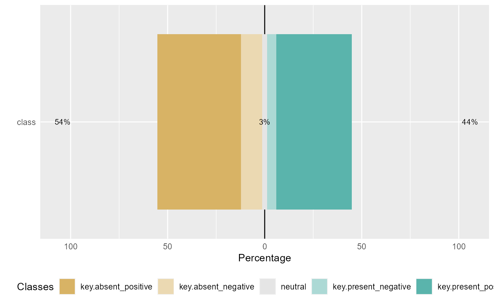

R/opi_impact.R
opi_impact.RdThis function assesses the impacts of a theme
(or subject) on the overall opinion computed for a DTD
Different themes in a DTD can be identified by the keywords
used in the DTD. These keywords (or words) can be extracted by
any analytical means available to the users, e.g.
word_imp function. The keywords must be collated and
supplied this function through the theme_keys argument
(see below).
opi_impact(textdoc, theme_keys=NULL, metric = 1, fun = NULL, nsim = 99, alternative="two.sided", quiet=TRUE)
| textdoc | An |
|---|---|
| theme_keys | (a list) A one-column dataframe (of any number of length) containing a list of keywords relating to the theme or secondary subject to be investigated. The keywords can also be defined as a vector of characters. |
| metric | (an integer) Specify the metric to utilize
for the calculation of opinion score. Default: |
| fun | A user-defined function given that parameter
|
| nsim | (an integer) Number of replicas (ESD) to generate.
See detailed documentation in the |
| alternative | (a character) Default: |
| quiet | (TRUE or FALSE) To suppress processing
messages. Default: |
Details of statistical significance of impacts
of a secondary subject B on the opinion concerning the
primary subject A.
This function calculates the statistical
significance value (p-value) of an opinion score
by comparing the observed score (from the opi_score
function) with the expected scores (distribution) (from the
opi_sim function). The formula is given as
p = (S.beat+1)/(S.total+1), where S_total is the total
number of replicas (nsim) specified, S.beat is number of replicas
in which their expected scores are than the observed score (See
further details in Adepeju and Jimoh, 2021).
(1) Adepeju, M. and Jimoh, F. (2021). An Analytical Framework for Measuring Inequality in the Public Opinions on Policing – Assessing the impacts of COVID-19 Pandemic using Twitter Data. https://doi.org/10.31235/osf.io/c32qh
# Application in marketing research: #`data` -> 'reviews_dtd' #`theme_keys` -> 'refreshment_theme' #RQ2a: "Do the refreshment outlets impact customers' #opinion of the services at the Piccadilly train station?" ##execute function output <- opi_impact(textdoc = reviews_dtd, theme_keys=refreshment_theme, metric = 1, fun = NULL, nsim = 99, alternative="two.sided", quiet=TRUE)#>#>#>#>#>#>#>#>#>#>#>#>#>#>#>#>#>#>#>#>#>#>#>#>#>#>#>#>#>#>#>#>#>#>#>#>#>#>#>#>#>#>#>#>#>#>#>#>#>#>#>#>#>#>#>#>#>#>#>#>#>#>#>#>#>#>#>#>#>#>#>#>#>#>#>#>#>#>#>#>#>#>#>#>#>#>#>#>#>#>#>#>#>#>#>#>#>#>#>#>#> $test #> [1] "Test of significance (Randomization testing)" #> #> $criterion #> [1] "two.sided" #> #> $exp_summary #> Min. 1st Qu. Median Mean 3rd Qu. Max. #> 52.76 57.03 59.30 59.12 60.80 65.33 #> #> $p_table #> #> #> |observed_score |S_beat |nsim |pvalue |signif | #> |:--------------|:------|:----|:------|:------| #> |67.84 |0 |99 |0.01 |*** | #> #> $p_key #> [1] "0.99'" "0.05*" "0.025**" "0.01***" #> #> $p_formula #> [1] "(S_beat + 1)/(nsim + 1)" #> #> $plot#>#extracting the pvalue in order to answer RQ2a output$pvalue#> NULL